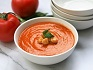

Tomato Soup
A classic creamy tomato soup with fresh basil and garlic.

Tomato Mac and Cheese
A cheesy twist to your mac and cheese with a touch of tomato goodness.

Tomato Chutney
Spicy, tangy tomato chutney, perfect as a dip or side dish.

Fresh Tomato Salad
A fresh and colorful salad with juicy tomatoes and a light vinaigrette.

Tomato Pesto
A vibrant and flavorful pesto made with ripe tomatoes and herbs.

Tomato Bake
A hearty tomato bake layered with cheese and spices.